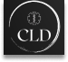
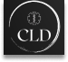

In an era where innovation is at it's peak, CLD-CyberLimbDyamics emerges as a beacon of technological excellence, pushing through the boundaries of what is possible in the realm of body part replication.Our cutting-edge software paired with advanced machinery is poised to revolutionize the way we percieve, create and interact with anatomical precision.
CyberLimbDynamics is a groundbreaking innovative Canadian Prosthetic body-parts visionary Company that is changing lives, one scan at a time. At the heart of our mission is a powerful software, that scans a patient or client's body, scrutinizing every detail of their cardio-muscular and skeletal system. With unparalleled precision, it identifies potential issues, providing invaluable insights into each individual's unique physiology. But what sets us apart is what happens next.
Once the scan is complete, our proprietary technology springs into action, crafting a precise, lifelike model of the prosthetic body part that is missing. This model isn't just a generic replacement; it's a personalized, artful creation that mirrors every feature of the patient or client's own body, right down to the minutest details. Our revolutionary manufacturing process takes this model and brings it to life, delivering a prosthetic that is not just functional, but a seamless part of who you are!
At CyberLinkDynamics-CLD, we have perfected the art of scanning body parts, unveiling the complexities of human physiology like never before. Our software allows for a level of detail that was once condidered unattainable, capturing every curve, crevice, and contour with an awe-inspiring precision that showcases the true beauty of the human form.
Beyond the science, it's the profound emotional connection that our innovations forge that truly defines the beauty of CLD-CyberLimbDyamics. Individuals can find renewed hope in the perfect fit of a prosthetic limb.
The applications of CLD-CyberLimbDyamics software and machinery are limitless. From aiding in medical training and research to customizing prosthetics and augmentations, our technology opens doors to a world where precision and accuracy meet the demands of tomorrow.
Our state-of-the-art machinery transforms the digital blueprint into tangible, lifelike body parts. The preciseness with which each part is crafted is unparalleled, ensuring a faithful replication that retains the essense of the original. The result is an almost indistinguishable work of art that recognizes the complexities of human anatomy.
The beauty of CyberLimbDynamics-CLD extends beyond the products themselves.We are pioneers in a movement that values the human experience, the potential for healing, and the celebration of our shared humanity.
About